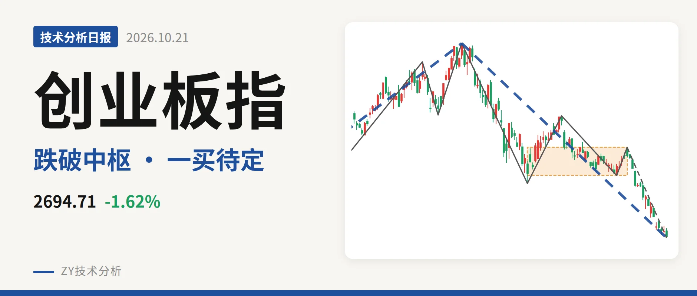
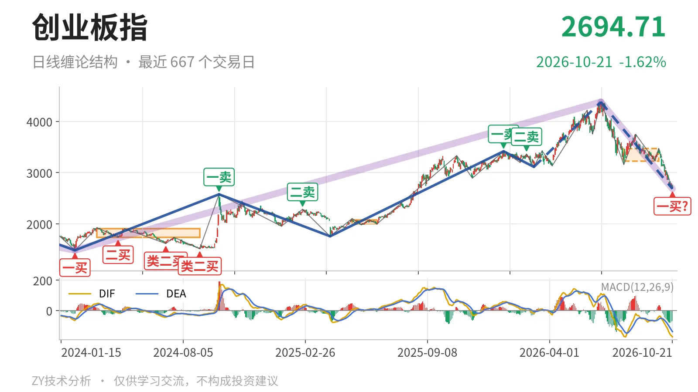
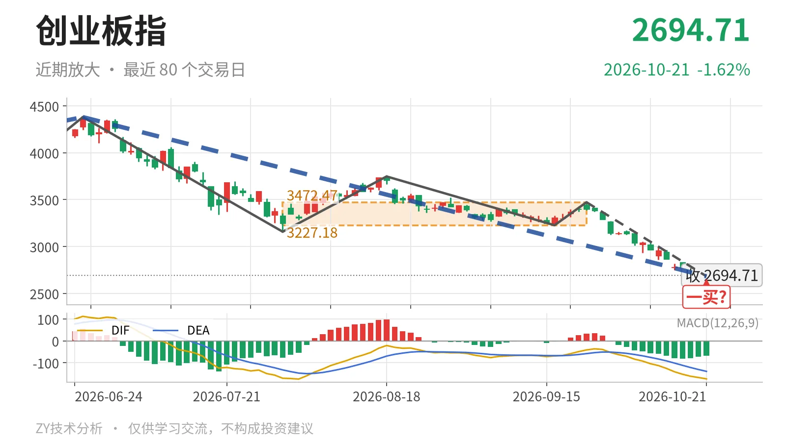

创业板指｜跌破3227.18点中枢下沿，一买暂定

最近日线中枢 3227.18—3472.47点，收盘位于中枢之下
一句话：跌破最近日线中枢下沿，下跌段未结束，一买暂定
📉 走势结构：大级别上涨未被终结，日线回落段仍在延续
当前处于6月25日以来的日线下跌段，该段还没有结束。更大级别走势中，2021年7月22日至2024年2月5日下跌段跌至1482.99点后已经结束；2024年2月5日至2026年6月25日上涨段涨195.4%，至今未被反向线段终结。但6月25日至10月21日的下跌段从4380.41点回落到2682.71点，跌约38.8%，同样没有结束。日线线段层面，6月25日以来的下跌线段仍包含5笔，3月9日至6月25日的上涨线段只把空间推到4380.41点，其后转入当前回撤。

🏔️ 中枢与位置：跌破最近日线中枢下沿，上移空间被吞没
最新收盘2694.71点已经跌破7月30日至9月22日日线中枢下沿3227.18点，低于下沿约16.5%。该中枢区间为3227.18—3472.47点，中轴3349.83点，目前尚未完成。此前2025年5月14日至2025年6月23日日线中枢在1996.96—2076.91点，后上移至3227.18—3472.47点，重心明显抬高。现在价格跌回3227点下方，并已靠近2020年7月、10月的历史重心2697点、2689点附近，说明这轮回落不是短波动，而是把中枢上移后的空间重新吞没。
📍 买卖点：暂定一买随笔延续变化，三买已降级
10月21日2682.71点的日线笔一买，所在下跌笔从9月22日延续至今没有结束，因此只是暂定的一买；该笔低点还会随后续K线变化。此前1月13日3416.84点一卖、2月25日3363.18点二卖，卖点一个比一个低，之后回落结构逐级展开。线段级别中，3月9日3111.88点三买已被本段下跌跌穿，该三买只对应更小级别的上冲，不能再支撑线段级别延续。

⚖️ 背驰：面积收缩但DIF新低，尚未形成标准底背驰
日线笔同向比较，6月25日至7月30日与9月22日以来两段下跌。前者绿柱面积1837，DIF低点-171.1；后者截至10月21日绿柱面积709，DIF低点-174.0。价格由3158.14点下探至2682.71点，指数新低，但绿柱面积明显萎缩，DIF低点却仍小幅下移，未出现“新低不新弱”。这说明下跌力度较第一段减弱，但空头动能尚未完全衰竭，底背驰还需等当前下跌笔结束。现在这一笔仍在新低过程中，DIF还在零轴下方，背驰只以仍在延续的这段为准。
🧭 关键位置观察：反抽站不回3227点，结构上构成三卖
结构偏弱，关键看反抽能否回到3227点上方。3227点是7月30日至9月22日中枢下沿，反抽若回不到3227点上方，结构上构成三卖，9月22日以来的下跌段会继续延伸。第一道结构位在3158点附近，这是6月25日以来首个下跌笔低点；下方2682.71点是暂定一买所在笔低点，若被继续跌破，说明9月22日以来的日线下跌笔仍在延续。重新站上3227点，下跌更可能只是中枢扩展，结构才转为中性观察；站上之前，日线结构保持偏弱。
⚠️ 本文为基于公开行情数据的缠论技术结构记录，由程序自动计算并生成，仅供学习交流，不构成任何投资建议。市场有风险，投资需谨慎。